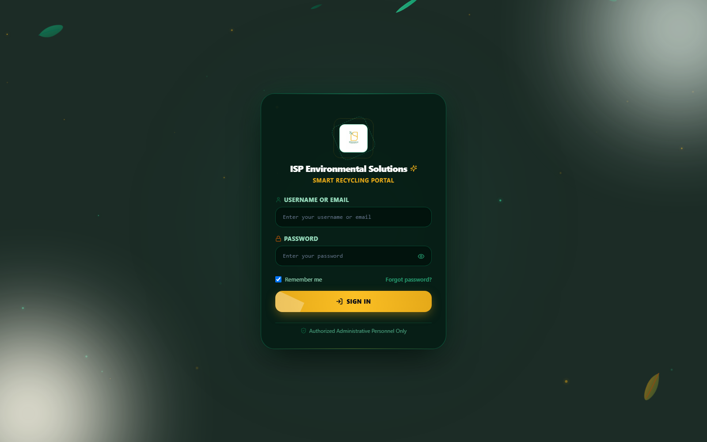
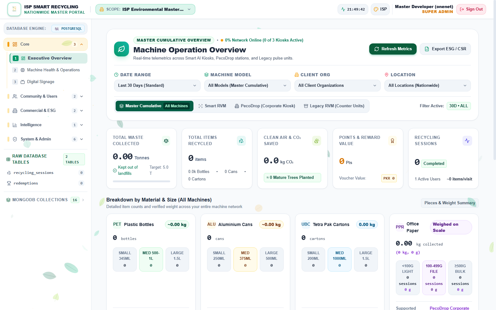
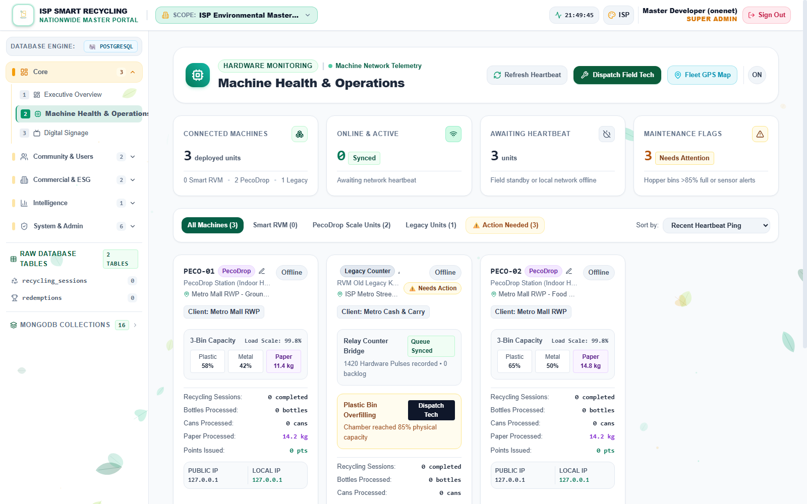
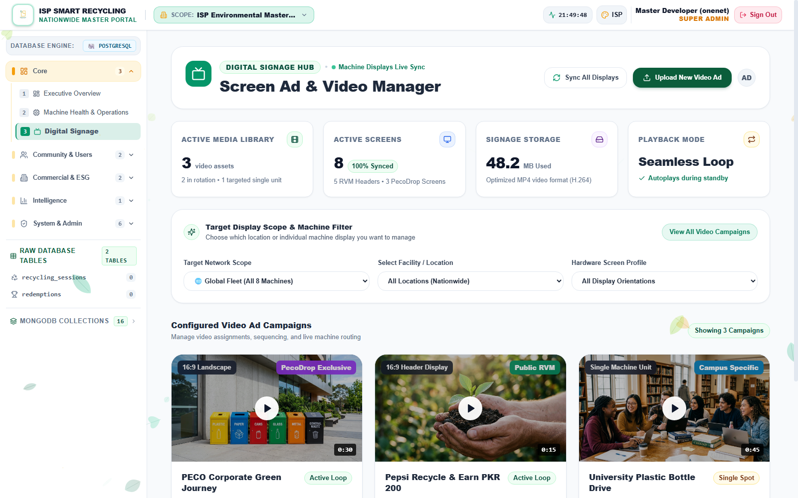
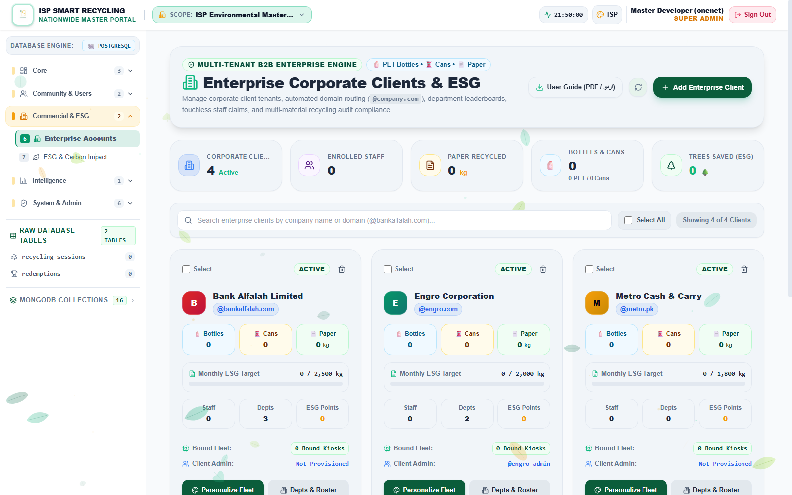
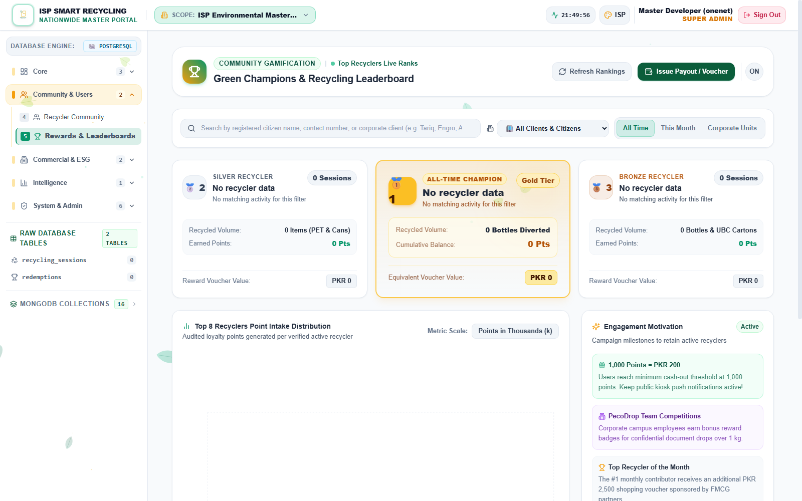
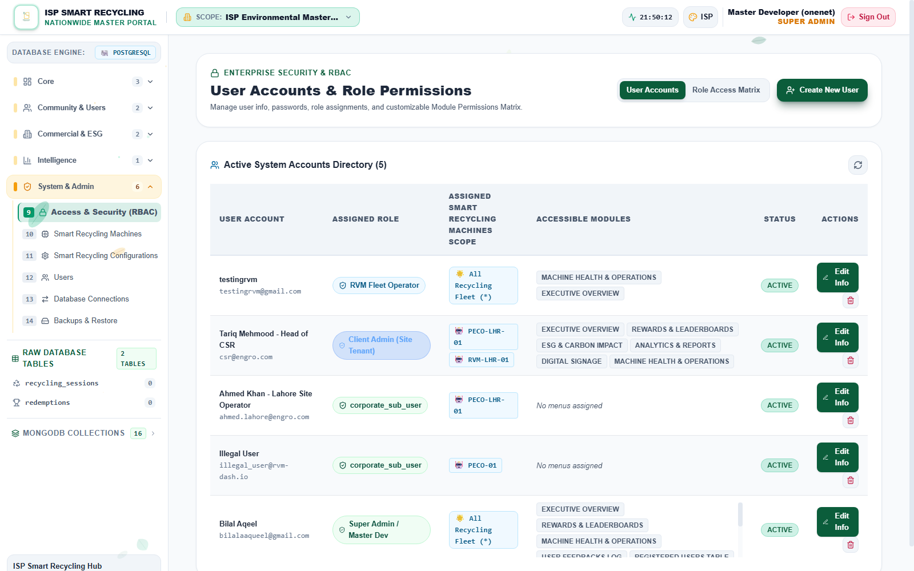
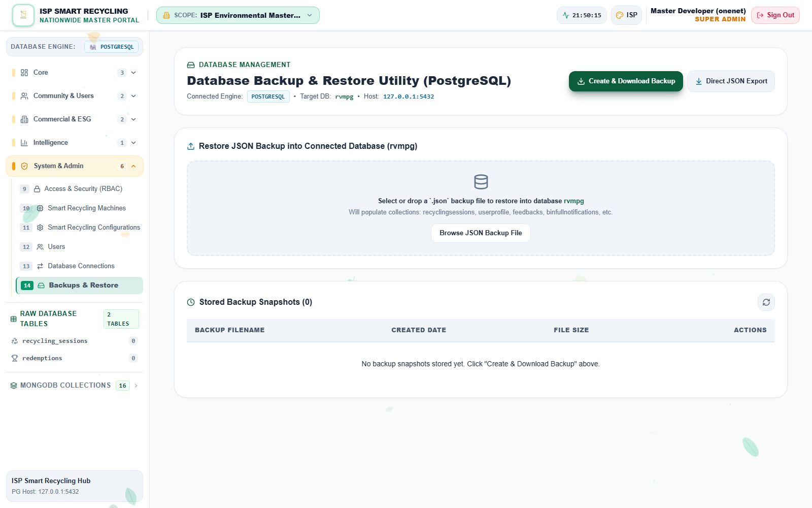

This manual covers the ISP Master Portal used to govern public RVMs, enterprise PecoDrop tenants, users, ESG reporting, rewards, digital signage, fleet configuration and data operations. The portal is a React/Vite interface backed by Node/Express and PostgreSQL.
Public RVM
General-public machines accepting plastic, cans and UBC cartons, with rejects, citizen rewards, mobile-wallet options and public leaderboards.
Enterprise PecoDrop
Corporate dual-display kiosks with QR/keypad authentication and separate plastic, metal/can and weighed-paper paths.
Production authority: PostgreSQL is the sole source of truth. MongoDB is legacy read-only and may only be used to synchronize historical data into PostgreSQL. Never add, edit or delete operational records in MongoDB.
Access roles
Role
Scope
Typical authority
Super Admin
All clients, sites and machines
Tenant approval/deletion, fleet assignment, RBAC, database tools and backups.
ISP operational roles
Modules assigned to the role
Fleet Operator, Analytics Analyst, Support Specialist and field technicians receive limited modules.
Client Admin
One corporate organization
Own fleet, reports, ESG, signage and corporate sub-users.
Corporate Sub-User
Explicit machine subset
Read/operate permitted analytics and machines only.
2. Login, navigation and filters
Open the production portal using an approved modern browser.
Enter the assigned ISP username and password; never share a Super Admin account.
Confirm the identity/role shown in the header before making changes.
Use the client and station selectors to set the working scope. Recheck scope before every edit, payout or deletion.
Use Logout at the end of the session, especially on shared support computers.
Charts, alerts and tables inherit the selected tenant/station scope.
Main navigation
Area
Purpose
Executive Overview
Fleet KPIs, material totals, sessions, uptime and operational summary.
Machine Health & Operations
Machine connectivity, telemetry, alerts and site-level status.
Digital Signage
Create, assign, publish and remove kiosk campaigns.
Recycler Community / Rewards
User activity, points, redemptions, rankings and controlled payouts.
Enterprise Accounts
Corporate tenants, departments, employees, branding, admins and fleet bindings.
ESG / Analytics & Reports
Environmental impact, compliance, reconciliation and exportable reporting.
System & Admin
RBAC, machines/configuration tables, database connections and backup/restore.
Theme accessibility: Use the portal’s supported themes. Status and material colors supplement text labels; do not rely on color alone when interpreting alarms.
3. Executive operations and machine health
Daily control-room review
Select All Sites and inspect headline KPIs for offline machines, bin alerts, intake variance and recent activity.
Open Machine Health & Operations and sort/filter affected machines.
Confirm machine ID, client, installed location, last heartbeat and reported state.
Change to a single client or station before investigating detailed events.
Record the issue and assign it to the correct RVM or PecoDrop technician workflow.
Do not mix machine identities
Machine
Expected material data
Important distinction
RVM
Plastic S/M/L, Can S/M/L, UBC S/M/L and Reject counts
Public sessions, public rewards and citizen identity.
PecoDrop
Plastic units, metal/can units and paper weight
Corporate employee, department and enterprise perks/ESG.
Machine record procedure
Open the appropriate machine view and search the exact machine ID.
Verify type, client ownership and location before editing.
Use configuration tools only for authorized parameters; document the old and new value.
Confirm the kiosk receives/synchronizes the configuration.
Validate normal telemetry after the change.
Never “fix” ownership by editing unrelated logs. Machine assignment is managed through tenant/fleet binding. Recycling transactions and physical machine records must remain intact.
Confirm copyright, brand approval, aspect ratio, schedule and file size before publishing.
Use destination assignment so RVM and PecoDrop campaigns reach the correct fleet.
Remove or expire outdated campaigns; do not overwrite evidence needed for an active incident.
4. Enterprise client lifecycle
Create and approve a client
Open Enterprise Accounts and choose Add/Create Organization.
Enter official company name, corporate email domain, contact details, monthly targets/budget and approved logo.
Review the organization status and approve legitimate onboarding requests.
Create the Client Admin account and provide credentials through the approved secure channel.
Assign only the intended unassigned/ISP_MASTER machines.
Save personalization and verify the client sees only its own organization.
Organization administration
Function
Required checks
Departments
Unique name, responsible manager and correct organization.
Employee roster
Corporate identity, department mapping and privacy authorization; validate bulk-import columns.
Branding
Approved logo, theme color and readable contrast.
Fleet binding
Machine ID, type, installed location and current owner.
Client Admin
Correct org_id, unique username, secure initial credentials and ACTIVE/approved state.
Safe reassignment
Verify machine→Review current tenant→Assign target tenant→Confirm binding→Test client visibility
Delete a corporate tenant
Super Admin only. Obtain written approval and verify the exact organization. Deletion revokes corporate access and removes organization structures; it must not delete physical machines or recycling history.
Export/retain any required business record before deletion.
Select the exact tenant; for bulk deletion, recheck every selected card.
Confirm bound kiosk IDs and affected administrators.
Execute individual or bulk delete and wait for completion.
Verify bindings are removed, departments and corporate accounts are purged, and machines return to ISP_MASTER — ISP Environmental Master (All Sites).
Confirm recycling logs and physical machine records remain available.
5. Users, RBAC and security
Least-privilege rule
Grant only the modules and machines required for the person’s job. Prefer named accounts over shared credentials. Client Admin and Corporate Sub-User scope must always include the correct organization, with sub-users limited to explicit machine IDs.
Role
Default module pattern
Fleet Operator
Overview and Machines
Analytics Analyst
Overview, Rewards/Analytics, Reports and ESG
Support Specialist
Overview, mobile users, feedback and user support data
PecoDrop/RVM Technician
Overview, Machines and Reports
Client Admin
Own overview/fleet, activity, rewards, ESG, reports, signage and sub-users
Corporate Sub-User
Assigned fleet subset, activity, rewards, ESG and reports; no user/signage administration
Create or change access
Confirm requester authority and intended organization/sites.
Select the correct role; add only necessary modules and machine IDs.
Set a temporary credential through an approved process and require secure change/handling.
Test using the affected role, not the Super Admin view.
Record approval, effective date and reviewer.
Approval queue
Review pending corporate onboarding requests for corporate email/domain, organization, contact and business authorization. Approve legitimate requests or reject with an auditable reason.
Immediate response: Suspend/revoke access for leavers, compromised accounts or unauthorized scope. Do not delete audit evidence while investigating.
6. Rewards, users and reconciliation
Recycler investigation
Open Recycler Community and search by the permitted user identifier.
Compare recycling sessions, earned points, redeemed points and current balance.
Review voucher/redemption code, status, category and timestamp.
Correct source data only through an approved PostgreSQL-backed application workflow.
Issue payout or voucher
Select the correct recycler and verify destination mobile/wallet details.
Choose EasyPaisa, JazzCash, airtime, merchant voucher or Raast as applicable.
Confirm PKR amount and required points; the standard displayed rule is 5 points = PKR 1.
Do not enable overdraft without explicit financial authorization.
Submit once, retain the returned reference and verify the redemption record.
Vouch365 status: The current codebase contains a Vouch365-labelled WebView/link and locally generated voucher references, but no authenticated external Vouch365 issuance API. Do not represent a locally generated code as externally funded or delivered until a provider response is implemented and verified.
Reporting
Set client/site/date filters before generating a report.
Reconcile material totals, sessions, rewards, voucher liability and ESG values.
Export only the minimum required personal data and store it according to ISP policy.
State the report scope, timezone and generation date when sharing externally.
7. Database connections, synchronization and backups
Database Connections
Use PostgreSQL as production authority for all additions, updates and deletions.
Use MongoDB only as a legacy read source for controlled historical synchronization into PostgreSQL.
Review health/test results before switching or synchronizing.
Never sync PostgreSQL changes back into MongoDB.
Backup procedure
Confirm active production database and sufficient protected storage.
Create a backup and wait for successful completion.
Record filename, timestamp, size and operator.
Download/store according to retention policy and restrict access.
Periodically test restoration in a non-production environment.
Restore procedure
High-impact operation: Obtain change approval, define recovery point and maintenance window, notify users, take a fresh pre-restore backup, then restore and validate.
Select the verified backup by timestamp and integrity.
Execute restore once; do not interrupt the server.
Validate login, tenant scope, machine inventory, recent sessions, rewards and health endpoints.
Record outcome and rollback decision.
Incident checklist
□
Capture time, user, selected client/site and affected module.
□
Record request/error message without exposing tokens or passwords.
□
Check portal health, PostgreSQL and machine connectivity.
□
Preserve logs and audit records.
□
Escalate financial, privacy or cross-tenant exposure immediately.
8. ISP operational checklists
Start of shift
□
Portal health and PostgreSQL connection normal.
□
Offline machines/bin alerts reviewed.
□
Pending tenant/user approvals reviewed.
□
Failed signage/config pushes reviewed.
□
Reward/redemption exceptions reviewed.
End of shift
□
Critical incidents handed over with machine/client IDs.
□
High-impact changes and deletions documented.
□
Backup status checked according to schedule.
□
Exports containing personal data secured or removed.
□
Portal session logged out.
Change record
Date/time
Operator
Client/site
Machine(s)
Change
Validation
Approval/reference
Visual Guide 1 — Secure login
Actual portal capture • 2026

Use an individual account. Never include passwords in screenshots or support tickets.
Identity Approved ISP username.
Password Protect shared workstations.
Session Remember Me only on private devices.
Visual Guide 2 — Executive overview
Master cumulative fleet view

Confirm scope, date range, model, client and location before interpreting KPIs.
Scope Sets tenant context.
KPIs Waste, impact, rewards and sessions.
Materials PET, cans, UBC and paper.
Visual Guide 3 — Machine health
Fleet telemetry

Search the exact machine ID and preserve selected scope while investigating.
Filter first Narrow the fleet.
Identity Verify type, owner and heartbeat.
Escalate Record evidence.
Visual Guide 4 — Digital signage
Campaign management

Create approved media, assign destinations and verify kiosk synchronization.
Library Review dates and status.
Destinations Separate RVM/PecoDrop.
Verify Confirm physical playback.
Visual Guide 5 — Enterprise accounts
Tenant governance

Review status, ESG targets, departments, fleet and Client Admin provisioning.
Add client Validate domain and logo.
Fleet Assign verified machines.
Deletion Return fleet; retain logs.
Visual Guide 6 — Rewards
Points and liability

Validate user, points, destination, method and approval before payout.
Balance Earned minus redeemed.
Provider Local code is not fulfilment proof.
Audit Retain reference.
Visual Guide 7 — Access and security
RBAC

Assign the smallest role, module set and machine scope required.
Accounts Use named identities.
Modules Limit by job.
Lifecycle Suspend leavers.
Visual Guide 8 — Backup and restore
High-impact operation

Restore only with approval, recovery point, window and validation plan.